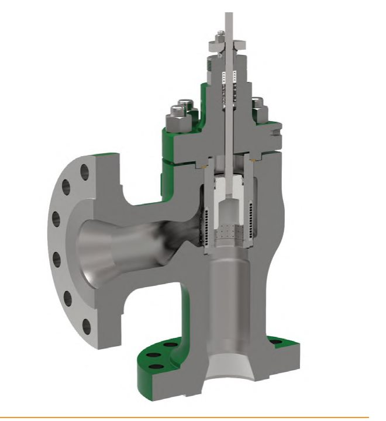
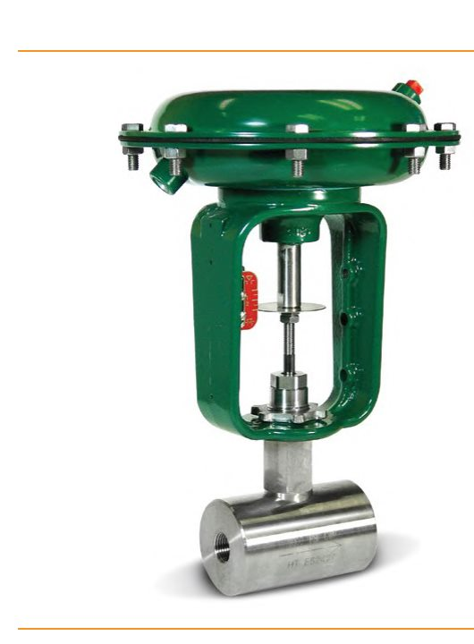
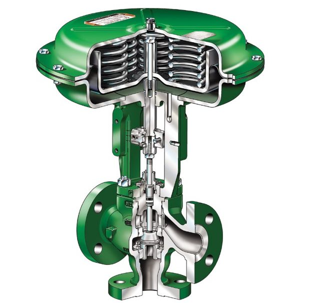

Specialty & Three-Way Body Styles

Turns the flow path 90° — common in boiler feedwater and heater drain service, and in tight piping where the valve can also serve as an elbow.
Machined from solid alloy bar stock instead of cast — used where exotic corrosion-resistant metals are required, sometimes cheaper than a cast body.
Combines two inlet streams or diverts one inlet to either of two outlets — one body doing the job two two-way valves and a manifold would otherwise do.After Control Valve Handbook, 6th ed., Figs. 3.1, 3.2, 3.6 — used directly. Component Index: cvh-cmp-flanged-angle-valve-body, cvh-cmp-bar-stock-valve-body, cvh-cmp-three-way-globe-valve-cutaway.